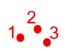
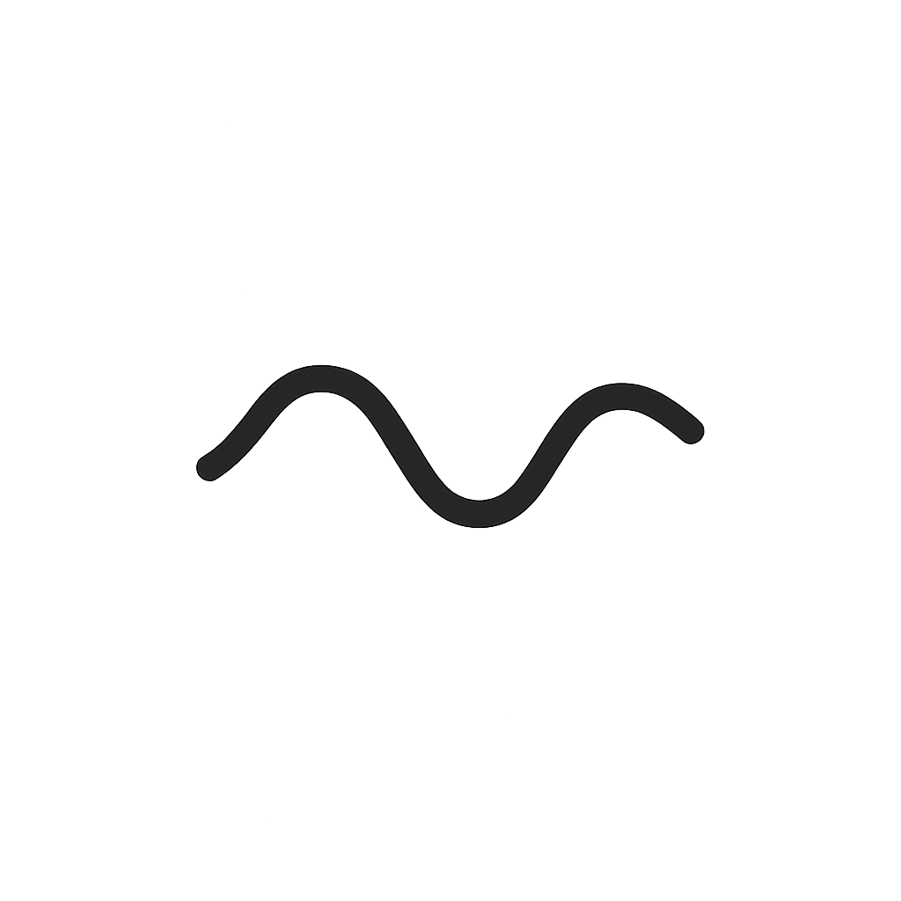
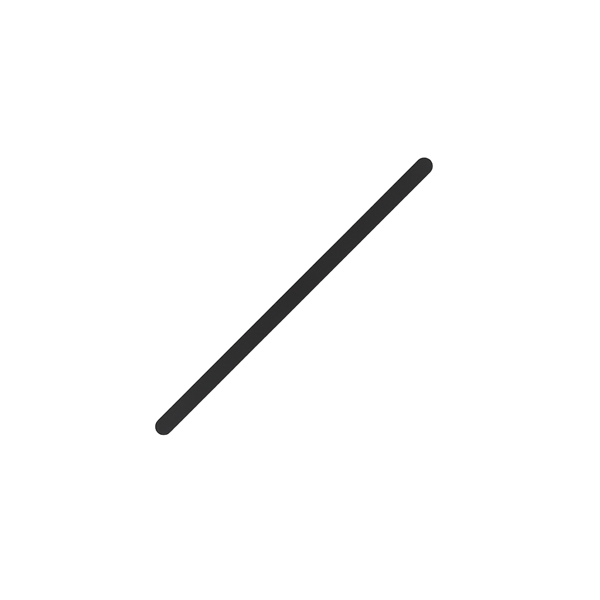
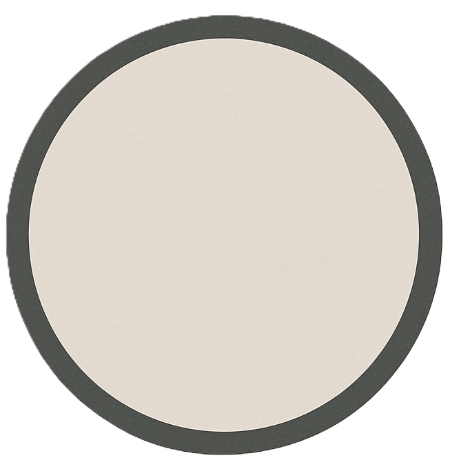
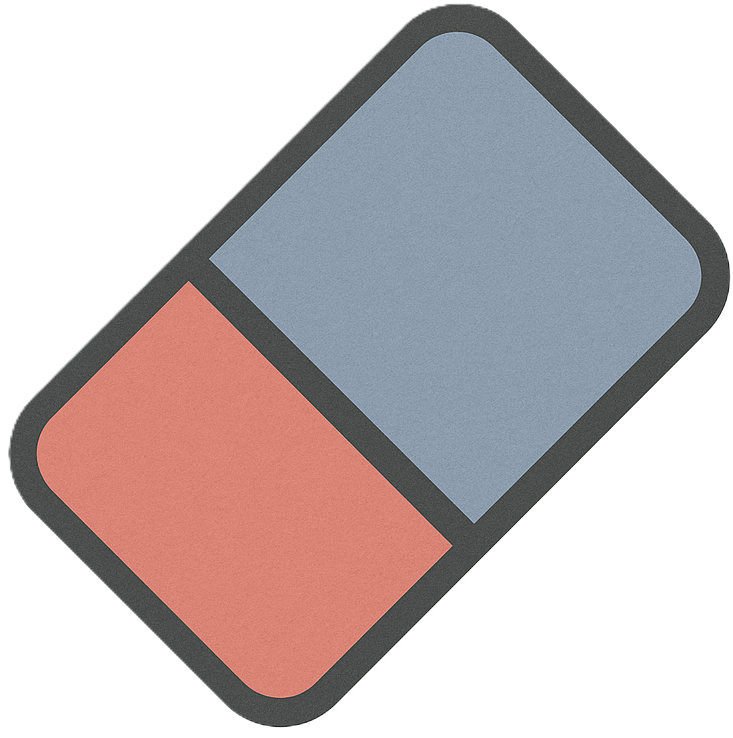

Keuzemenu
Punttekening Bewerken & Bekijken
Afbeelding uploaden:
Upload
Max punten:
1 punt/actie terug
Alles wissen
Opnieuw
Teken Tools





Dikte (potlood/gum):
Gumvorm:
Rond
Vierkant
Download Afbeelding (PNG)
Download Werkblad (PDF)